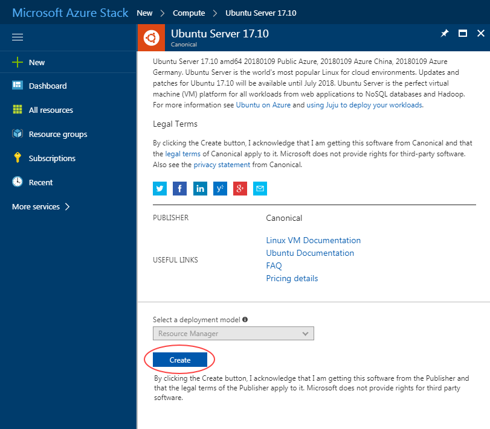

How to create a virtual machine from the Azure Marketplace
Introduction
With UKCloud's Sovereign Azure cloud, you can leverage the power of Microsoft Azure to create virtual machines (VMs) for your on-premises applications. As Sovereign Azure is built on UKCloud's assured, UK-sovereign multi-cloud platform, those applications can work alongside other cloud platforms, such as Oracle, VMware and OpenStack, and benefit from native connectivity to non-cloud workloads in Crown Hosting and government community networks, including PSN, HSCN and RLI.
Intended audience
To complete the steps in this guide, you must have appropriate access to a subscription in the UKCloud Azure Stack portal.
Creating a Sovereign Azure virtual machine
VMs provide the basic compute building blocks in Azure Stack. You can create VMs using the Azure Marketplace, which provides access to pre-created images to quickly deploy the VMs you need to build your applications.
To create a VM from the Azure Marketplace:
Log in to the UKCloud Azure Stack portal.
For more detailed instructions, see the Getting Started Guide for Sovereign Azure.
In the favourites panel, select New.

In the New blade, select Compute.

In the Compute blade, select the image that you want to use for your VM, for example, Ubuntu Server 17.0.

anything in particular we want to point out here?
In the Deployment blade, click Create to confirm your VM image selection.

In the Create virtual machine blade, in the Basics step, enter general information about the VM, including a name, credentials and resource group, then click OK.

In the Size step, select the appropriate size for your VM, depending on its purpose, then click Select.
| Size | vCPU | Memory (GiB) | Temp storage (GiB) |
|---|---|---|---|
| Standard_D1_v2 | 1 | 3.5 | 50 |
| Standard_D2_v2 | 2 | 7 | 100 |
| Standard_D3_v2 | 4 | 14 | 200 |
| Standard_D4_v2 | 8 | 28 | 400 |
| Standard_A0 | 1 | 0.768 | 20 |
| Standard_A1 | 1 | 1.75 | 70 |
| Standard_A2 | 2 | 3.5 | 135 |
| Standard_A3 | 4 | 7 | 285 |
| Standard_A4 | 8 | 14 | 605 |
| Standard_A5 | 2 | 14 | 135 |
| Standard_A6 | 4 | 28 | 285 |
| A0\Basic_A0 | 1 | 768 MB | 20 GB |
| A1\Basic_A1 | 1 | 1.74 GB | 40 GB |
| A2\Basic_A2 | 2 | 3.5 GB | 60 GB |
| A3\Basic_A3 | 4 | 7 GB | 120 GB |
| A4\Basic_A4 | 8 | 14 GB | 240 GB |
| Standard_DS11_v2 | 2 | 14 | 28 |
| Standard_DS12_v2 | 4 | 28 | 56 |
need to confirm list above is correct and up to date
Tip! By default, the list shows a selection of recommended VM sizes. To see all available VM sizes, click View all.

In the Settings step, change any of the optional settings as required for your VM, then click OK.
any recommendations or best practices we want to suggest here?

In the Summary step, review the selections you've made and then click OK to start the deployment.
You can monitor the progress of your VM's deployment by clicking the Notifications icon.

Click the deployment notification for the deployment to view details of the deployment of the VM and its resources.

When the deployment is finished, the notification wil change to Deployment succeeded.

After your VM has deployed, you can view it by clicking Virtual machines in the favourites panel.

Select your VM from the list.

In the blade for your VM, you can view and monitor the VM, change its settings and perform diagnostics and troubleshooting.

Next steps
For more information about our Sovereign Azure cloud, see:
Feedback
If you have any comments on this article, or any other aspect of your UKCloud experience, send them to feedback@ukcloud.com.
(c) UKCloud Ltd, 2018. All Rights Reserved.